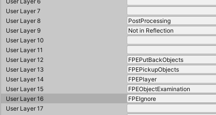

First Person Exploration Kit: Working with High Definition Render Pipeline
 *** HDRP is still effectively in BETA. I recommend you do not use it until Unity is finished changing it. This guide was created using Unity v2020.2.1f1, HDRP v10.2.2, and FPEKit v2.2.5 ***
*** HDRP is still effectively in BETA. I recommend you do not use it until Unity is finished changing it. This guide was created using Unity v2020.2.1f1, HDRP v10.2.2, and FPEKit v2.2.5 ***
Table of Contents
Importing Project Files
Start a new Project (tested on Unity 2020), Select HDRP as Template
Verify scene looks correct (show gold ball scene view thing in RUN mode)

Start another new project in the same unity version, and import import First Person Exploration Kit from the Asset Store.
Verify it works as expected (show game view scene)
Updating Layers and Physics
Close all copies of Unity
Browse to your First Person Exploration Kit project folder. You will need to copy Assets and SOME project settings to your HDRP project.
First, copy the /Assets/FirstPersonExplorationKit/ to your HDRP project /Assets/ folder.
Next, copy /ProjectSettings/InputManager.asset into your HDRP /ProjectSettings/ folder.
Note: Layers now include "PostProcessing" on Layer 8, and "Not In Reflection" on Layer 9. We will need to update a couple of FPE Kit prefabs for this, as layer 8 and 9 in FPEKit are used for interaction functions. We will also have to update physics interactions as well.
Open your HDRP project and let it import all the new stuff you copied from FPE Kit.
Open the Project Settings window, and select Tags and Layers
Starting at Layer 12, add the FPE Kit layers:

Next, select Physics, and ensure your physics interaction matrix looks like this:
Updating Prefabs
Updating FPEPlayerController
Select the FPEPlayerController prefab, and edit it. Change the Layer of this prefab to FPEPlayer, click yes to change child objects if prompted.
Create a new folder in FirstPersonExplorationKit called HDRPMaterialUpgrades
Create a new material, call it MyHDRPDefault
Edit the FPEPlayerController prefab again, and select the GraphicsReference child of FPEPlayerController prefab, and assign MyHDRPDefault material to it.
Select the Sphere child objects of the player controller, assign the MyHDRPDefault material, and disable the mesh renderer and mesh filter components.
Updating FPEInteractionManager
Edit the FPEInteractionManager prefab
In the Inspector, change the Put Back Layer Mask and Interaction Layer Mask as shown below:

Note: While editing FPEInteractionManager, you may a repeated error message caused by OnDrawGizmos. This can be ignored as it will not happen during regular use.
Updating Demo Prefabs
Some demo prefabs, like demoManualSlidingDoor, and demoSecuritySystem use the FPEIgnore layer. But we changed what this layer is to make room for HDRP layers. So, any prefab that previously used FPEIgnore will now point to another layer, like FPEPutBackObjects. So you must edit those prefabs to ensure the child objects on the FPEPutBackObjects layer are moved to the FPEIgnore layer.
- demoManualSlidingDoor and demoManualSlidingDoor_Locked "SlidingPart" and "DoorJamb_Pocket" children
- demoSecuritySystem "KeypadHousing" child
Prepare a New Scene for HDRP
Create a new Scene, and select Indoor scene template.
Save you scene as IndoorsScene.
Place FPECore prefab in your scene at (0,0,0)
Place a new empty game object, and add the FPEPlayerStartLocation script. Position it at coordinates (0, 0.2,0)
Create a cube, rename it table, and place it on the ground in the scene at (0, 0.5, 2)
Grab the demoSoup prefab and place it on the table.
Note: The soup can materials are pink. You can edit the soup materials to use HDRP > Lit, and the soup can lids to be HDRP > Lit, with Alpha Clipping enabled. Set the Base Map to be the old material's albedo texture.
Run the scene. Look at the soup and press the interact button to pick it up.
You're finished! All other functionality for FPE Kit should now work as expected.
Updating Other Project Materials
The other demo materials may have pink materials due to legacy shader conflicts with HDRP. You can convert all of them by switching the material to use HDRP > Lit, and selecting the albedo mask again.
For example, DemoWall material can be switch to use HDRP > Lit, and set Base Map to be \Assets\FirstPersonExplorationKit\Textures\DemoTextures\DemoLevelGeometry\wall.png
You can also convert these automatically, by selecting Edit > Render Pipeline > HD Render Pipeline > Upgrade from Builtin Pipeline > Upgrade Project Materials to High Definition Materials
The Triplanar shader may not be compatible at all, but can be discarded or set to HDRP > Lit as its only used for very specific demo scene surfaces.
Before:
After: